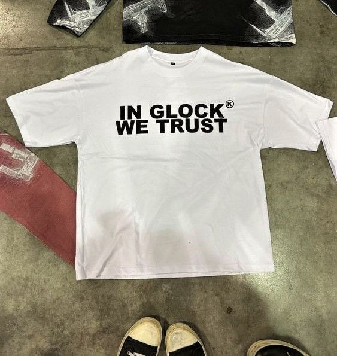
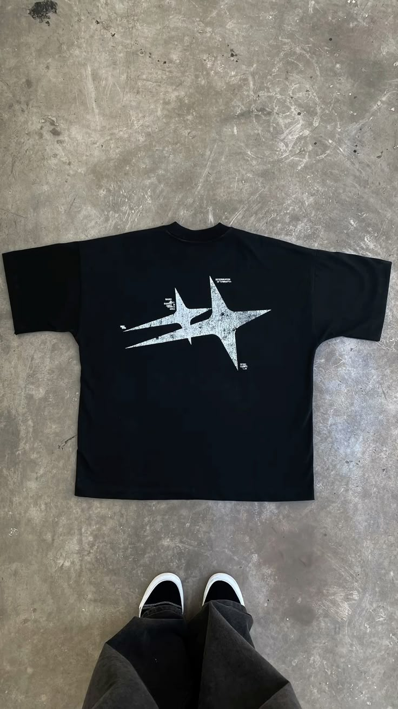
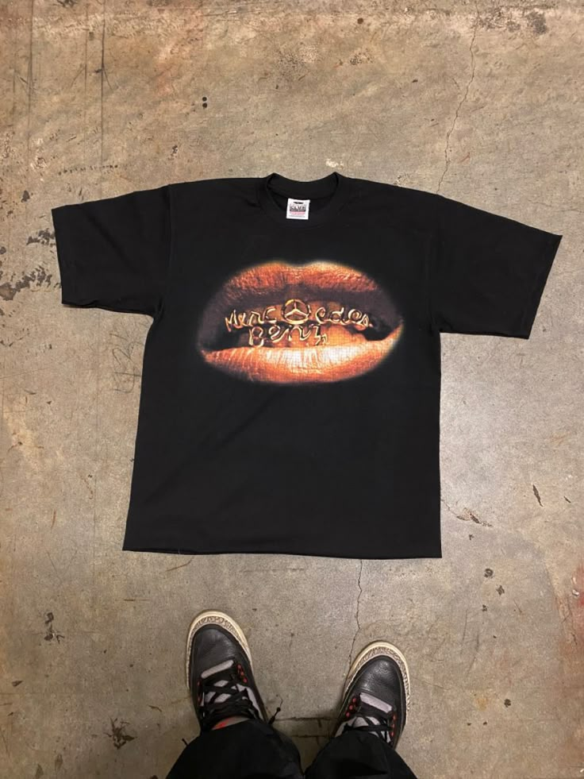
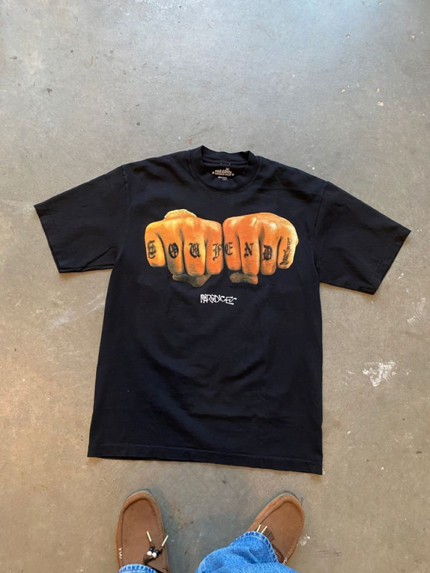
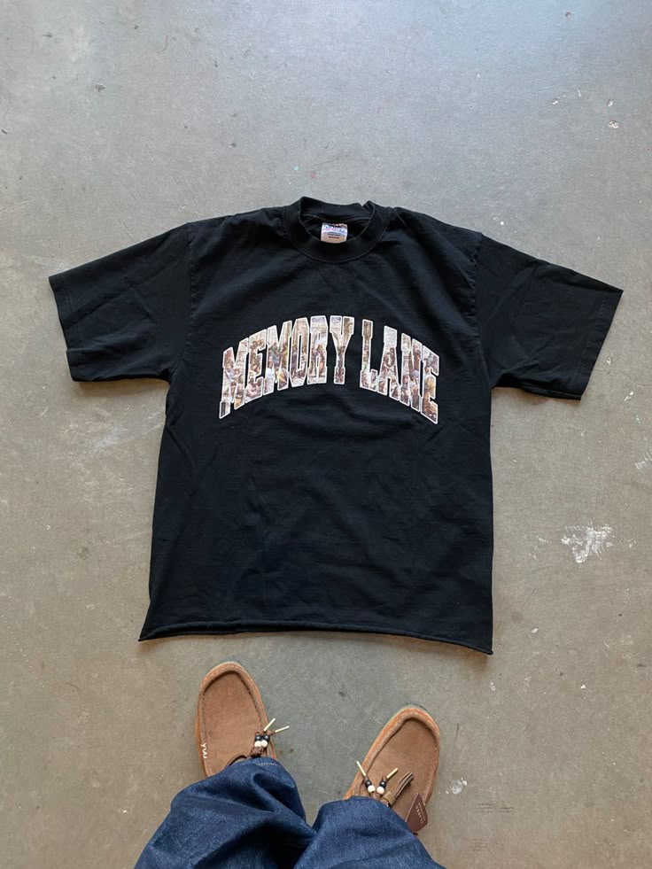
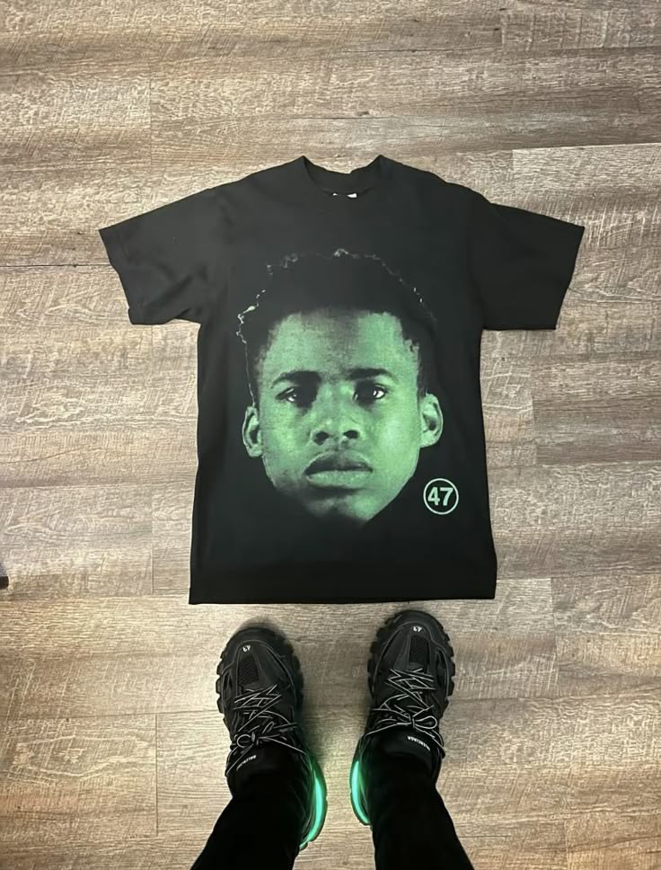
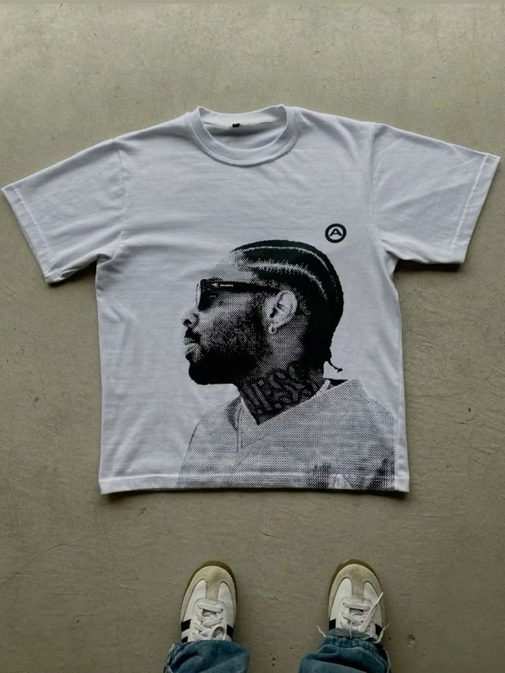
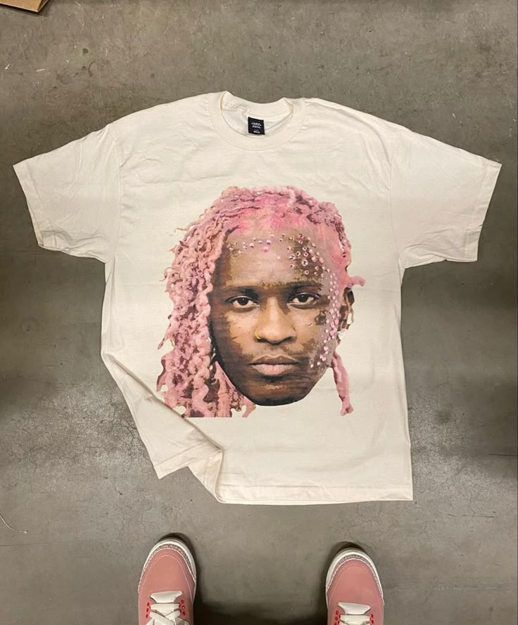

AXOLOOK è uno software 3D che nasce da un esigenza. Spesso ti sarà capitato di voler comprare un indumento online, ma eri incerto sulla vestibilità o se quel particolare indumento andava bene nell outfit che ti eri immaginato. Ora con Axolook puoi dar vita agli outfit che ti immagini e visualizzarli in 3d, metterli addosso ad un manichino e personalizzarli!